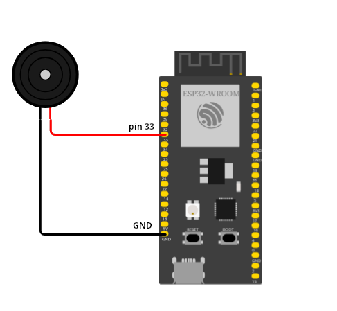

Sensori: i buzzers
I buzzer sono dei componenti sonori utilizzati nei più disparati dispositivi elettrici ed elettronici: nei calcolatori, negli orologi, negli allarmi, nei cruscotti delle auto, nei campanelli delle case fino ai... cellulari!
I tipi di buzzer che noi utilizzeremo sono molto semplici (e non troppo rumorosi) ma concettualmente identici a tutti gli altri, diversi magari per dimensione e/o rumorosità.
I buzzer sono di due tipi:
- buzzer attivi: sono quelli che hanno un oscillatore al loro interno e che per suonare necessitano solo di essere alimentati
- buzzer passivi: necessitano di un oscillatore esterno (nel nostro caso un PWM) per emettere un suono.

I buzzer attivi sono semplicissimi da usare, ma tipicamente sono in grado di fare solo uno specifico suono. I buzzer passivi necessitano di un intero circuito per funzionare, ma di contro possono essere regolati per emettere suoni a frequenze differenti.
Tipicamente il collegamento all'ESP32 di un buzzer è il seguente:

Buzzer attivo
Un buzzer attivo va semplicemente collegato come in figura e fatto suonare secondo il seguente codice:
from machine import Pin
import time
buzzer = Pin(33,Pin.OUT)
buzzer.off()
while True:
buzzer.on()
time.sleep(1)
buzzer.off()
time.sleep(1)
Buzzer passivo
Il collegamento elettrico del buzzer passivo è concettualmente identico a quello attivo, ma va scelto un Pin di collegamento che supporti il PWM, che va gestito a livello di codice.
from machine import Pin,PWM
import math
import time
PI = 3.14
pinB = Pin(33,Pin.OUT)
passiveBuzzer = PWM( pinB, 2000)
passiveBuzzer.init()
for x in range(0,36):
sinVal = math.sin(x*10*PI/180)
toneVal = 2000 + int(sinVal*500)
passiveBuzzer.freq(toneVal)
time.sleep_ms(10)
passiveBuzzer.deinit()
Tutto qua! Adesso, sotto con i progetti!!!
Esercizi
Ecco alcuni degli esercizi sui buzzer e sui sensori che abbiamo già studiato. Provate a fare i primi e ad arricchirli come credete!
Buon divertimento!!!
Campanello
Implementare un progetto con un buzzer (attivo) e un pulsante. Quando si tiene cliccato il pulsante suona l'allarme, che ha il tipico suono ondulato che varia dall’acuto al grave in maniera continua.
Allarme
Come il precedente ma stavolta con un buzzer passivo. Implementare un progetto con un buzzer e un pulsante (come il precedente). Quando si tiene cliccato il pulsante suona il buzzer!
Sirena
Implementare un progetto con un buzzer che suona per 2 secondi ogni 3 secondi.
Luce e Suono
Aggiungete una luce a LED al progetto precedente. Quando il buzzer suona, la luce deve accendersi.
Barra dei led e suono
Implementare un progetto con un buzzer passivo e una barra dei led. Quando il buzzer suona la barra dei led si accende. Più è acuto il suono, più la barra deve "caricarsi". La barra va spenta completamente solo quando il suono è spento.